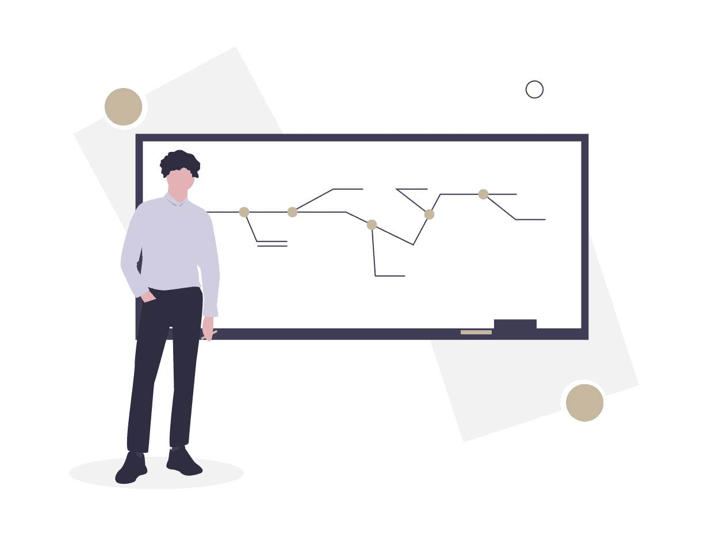

{kind=link}
{kind=link}
{kind=link}
{kind=link}
Ο σκοπός της πρώτης συνεδρίας είναι κυρίως η γνωριμία μεταξύ θεραπευτή και θεραπευόμενου, η λήψη σύντομου ιστορικού, η κατανόηση των προβλημάτων και των αιτημάτων, και η θέσπιση των στόχων της θεραπείας που θα ακολουθήσει.
Πλούσια Eμπειρία Χρόνων.
Η εμπειρία χρόνων σε κλινικές 40 κλινών και ιατρεία, καθιστούν τον ιατρό ικανό να εκτιμήσει και να αντιμετωπίσει σωστά ακόμα και τις πιο δύσκολες περιπτώσεις. Έχει υπάρξει υπεύθυνος κλινικής για 6 χρόνια και θεράπων σε ιδιωτικές κλινικές για 20 χρόνια.

Βαθιά Διερεύνηση Κάθε Περιστατικού.
Σε κάθε ασθενή αφιερώνεται ο απαραίτητος χρόνος χωρίς βιασύνη. Απο τον γιατρό γίνεται βαθιά διερεύνηση του προβλήματος ακόμα και από άλλες ειδικότητες αν χρειαστεί. Το αποτέλεσμα είναι μεγαλύτερο ποσοστό επιτυχίας και συντομότερη θεραπεία.
Εικοσαετής Σχέση Εμπιστοσύνης Με Πολλούς Ασθενείς.
Μακροχρόνια θεραπευτική σχέση με τους περισσότερους αρχικούς ασθενείς, τις οικογένειες και τους φίλους τους. Επιλογή του Νίκου Βήχου ως οικογενειακό γιατρό από πολλές οικογένειες.
ΥΠΗΡΕΣΙΕΣ
-
Προληψη
Η πρόληψη γίνεται ανάλογα με την ηλικία, το φύλο και το οικογενειακό ιστορικό.
-
διαγνωση
Σύντομη διάγνωση και αποκλεισμός άλλων παθήσεων.
-
αντιμετωπιση
Πάντα με τις ισχύουσες διεθνείς κατευθυντήριες οδηγίες.
Το ιατρείο
Το ιατρείο είναι ειδικά διαμορφωμένο ώστε να έχει ο ασθενής την βέλτιστη εμπειρία. Η λιτότητα των χώρων δημιουργουν αίσθηση άνεσης. Παράλληλα η ακρίβεια των ραντεβού έχει ως αποτέλεσμα να αποφεύγεται ο συνωστισμός, ενώ η τήρηση των μέτρων προστασίας παρέχουν ασφάλεια στον χώρο του ιατρείου.
δυνατοτητα νοσηλειας
- Η νοσηλεία προσφέρει στον ασθενή ασφάλεια όταν παρουσιαστεί κάτι έκτακτο.
- Είναι σύντομη με κύριο χαρακτηριστικό την αποφυγή περιττών πράξεων, φαρμάκων και εξετάσεων.
- Ο ασθενής δε θα χρεωθεί περισσότερο από όσο πρέπει ενω προσφέρει πολύ πιο αποτελεσματική, οικονομική και γρήγορη διάγνωση.
- Ο Νίκος Βήχος προσφέρει δυνατότητα νοσηλείας στον ασθενή με θεράπων ιατρό τον ίδιο.
Συχνές Ερωτήσεις
-
Τι είναι ο παθολόγος;
-
Ποτε πρεπει να πάω σε παθολόγο;
Η συχνότητα των ψυχοθεραπευτικών συνεδριών εξαρτάται από τις ανάγκες και τις επιθυμίες του θεραπευόμενου.
Γενικά στην αρχή της θεραπείας και στην περίπτωση ενός προβλήματος που προκαλεί μεγάλη δυσφορία και δυσλειτουργικότητα προτείνεται οι συνεδρίες να είναι συχνές, δηλαδή εβδομαδιαίες, και έπειτα να αραιώνουν (κάθε δεκαπέντε ημέρες ή κάθε μήνα).
Η διάρκεια της ψυχοθεραπείας εξαρτάται κυρίως από την φύση του προβλήματος που φέρνει ο θεραπευόμενος, από το κίνητρό του για συνεργασία, από την επαφή με το συναίσθημα του, την σκέψη του, και την συμπεριφορά του.
Γενικά στην γνωσιακή συμπεριφορική ψυχοθεραπεία επιχειρείται όσο το δυνατόν συντομότερη και αποτελεσματικότερη αλλαγή στην συμπεριφορά και την σκέψη του θεραπευόμενου. -
Υπάρχει δυνατότητα online συνεδρίας;
Ναι, η υπηρεσία αυτή είναι διαθέσιμη σε άτομα με ειδικές ανάγκες και σε άτομα που ζουν σε απομακρυσμένες περιοχές της Ελλάδας, όπου η πρόσβαση σε υπηρεσίες ψυχικής υγείας είναι πολύ δύσκολη.
Κλείστε Ραντεβού
Δώστε στον εαυτό σας την φροντίδα που του αξίζει
Λαζαράκη 6, Γλυφάδα 16675